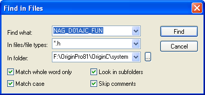

NAG-Funktionen mit Origin C aufrufen
OC-Call-NAG
Zusammenfassung
Das Aufrufen einer NAG-Funktion mit Hilfe einer Origin C-Funktion ähnelt dem Aufrufen jeder anderen ORigin C-Funktion sehr. Sie müssen sich mit der gewünschten NAG-Funktion vertraut machen, um zu verstehen, welche Parameter die Funktion benötigt, die als Argumente weitergegeben werden, und welche Parameter die Funktion ausgibt. Sobald Sie die Funktion kennen, müssen Sie einen Code entwickeln, der den Anforderungen der Funktion entspricht.
Die NAG-Headerdatei, die den Prototyp der Funktion enthält, muss eingeschlossen werden, erforderliche Parameter müssen korrekt deklariert, in der Größe angepasst und initiiert werden, und der Funktionsaufruf muss dem Prototypen der Funktion, wie in der Headerdatei beschrieben, folgen. Das Ziel dieses Tutorials ist zu zeigen, wie eine NAG-Funktion mit Hilfe einer Origin C-Funktion aufgerufen wird.
Origin-Version mind. erforderlich: Origin 8.1 SR1
Was Sie lernen werden
Dieses Tutorial zeigt Ihnen, wie Sie:
- NAG-Funktionen verstehen,
- das Debuggen von Beispielcode vorbereiten,
- NAG-Header einbinden,
- die Deklaration der NAG-Funktion anzeigen,
- NAG-Fehlercode ermitteln,
- den Funktionszeiger verwenden.
NAG-Funktionen verstehen
Die wichtigste Quelle, um NAG-Funktionen verstehen zu lernen, ist die NAG-Bibliothek. Die Bibliothek befindet sich auch in der Hilfe zu Origin C. Ein Beispiel ist die NAG-Funktion d01ajc:
- Wählen Sie im Origin-Menü Hilfe: Programmierung: OriginC. Erweitern Sie in der Origin C Reference das Kapitel Global Functions, dann das Kapitel zu NAG-Funktionen, und wählen Sie Accessing NAG Functions Category and Help.
- Wählen Sie die Kategorie Quadrature (d01) und dann die Funktion nag_1d_quad_gen (d01ajc).
- Die ausgewählte Seite ist eine PDF-Datei. Sehen Sie sich die Funktion nag_1d_quad_gen in Ruhe an, bis Sie die Beschreibung der Funktion, den Prototyp der Funktion und die Beschreibung aller Argumente verstanden haben. Beispieldaten und ein Beispielprogramm, das die Funktion aufruft, sind ebenfalls enthalten.
Die zweitwichtigste Quelle, um sich über Origin C-NAG-Funktionen zu informieren, sind die Beispiele. Wählen Sie im Origin-Menü Hilfe: Programmierung: OriginC, erweitern Sie das Oberkapitel Examples, dann das Kapitel Analysis und wählen Sie Accessing NAG Functions. Es gibt einige Beispiele, die Ihnen zeigen, wie NAG-Funktionen in Origin C aufgerufen werden.
Debuggen von Beispielcode vorbereiten
Der beste Weg, um zu verstehen, wie man eine Origin C-Funktion schreibt, die eine NAG-Funktion aufruft, besteht darin, eine Beispielfunktion im Modus Debuggen nachzuvollziehen. Befolgen Sie die Schritte unten, um Origin und den Code Builder so einzurichten, dass Sie solch eine Beispielfunktion von Origin C im Modus Debuggen ausführen können.
- Wählen Sie im Menü Code Builder die Option Datei: Neu. Der Dialog Neue Datei wird geöffnet.
- Geben Sie in dem Textfeld Dateiname das Wort TestNAG ein und lassen Sie das Kontrollkästchen Zu Arbeitsbereich hinzufügen aktiviert. Klicken Sie auf OK. Die Datei TestNAG.c wird zum Arbeitsbereich hinzugefügt.
- Wählen und kopieren Sie die folgende Funktion und fügen Sie sie in die Datei TestNAG.c ein. Stellen Sie sicher, dass Sie den untenstehenden Text unter der Zeile "// Include your own header files here." einfügen.
// Include your own header files here. #include <OC_nag8.h> � /////////////////////////////////////////////////////////////// // Start your functions here. � //NAG_CALL denotes proper calling convention. You may treat it //like a function pointer and define your own integrand double NAG_CALL f(double x) { return (x*sin(x*30.0)/sqrt(1.0-x*x/(PI*PI*4.0))); } � void nag_d01ajc_ex() { double a = 0.0; double b = PI * 2.0; // integration interval � double epsabs, abserr, epsrel, result; // you may use epsabs and epsrel and this quantity to enhance // your desired precision when not enough precision encountered epsabs = 0.0; epsrel = 0.0001; // The max number of sub-intervals needed to evaluate the // function in the integral. The more diffcult the integrand // the larger max_num_subint should be. // For most problems 200 to 500 is adequate and recommmended int max_num_subint = 200; �
Nag_QuadProgress qp; static NagError fail; d01ajc(f, a, b, epsabs, epsrel, max_num_subint, &result, &abserr, &qp, &fail); � // For the error other than the following three errors. // which are due to bad input parameters or allocation failure // NE_INT_ARG_LT NE_BAD_PARAM NE_ALLOC_FAIL. // You will need to free the memory allocation before calling // the integration routine again to avoid memory leakage. if (fail.code != NE_INT_ARG_LT && fail.code != NE_BAD_PARAM && fail.code != NE_ALLOC_FAIL) { NAG_FREE(qp.sub_int_beg_pts); NAG_FREE(qp.sub_int_end_pts); NAG_FREE(qp.sub_int_result); NAG_FREE(qp.sub_int_error); } � printf("%10.6f", result); }
NAG-Header einbinden
#include <OC_nag8.h>
Diese Headerdatei enthält alle Headerdateien der NAG-Funktionen und alle Typ- und Fehlercodedefinitionen. Es sollte daher ausreichen, diese eine Funktion einzuschließen.
Deklaration der NAG-Funktion anzeigen
Sehen Sie sich die Deklaration der NAG-Funktionen in der Headerdatei an:
- Aktivieren Sie die Datei TestNAG.c, die im Abschnitt oben erstellt wurde, und verschieben Sie die Laufleiste, um die Zeile #include <OC_nag8.h> zu suchen.
- Klicken Sie mit der rechten Maustaste auf eine beliebige Stelle in der Zeile und wählen Sie Open "OC_nag8.h". Dadurch wird die Headerdatei geöffnet, die alle NAG-Header enthält.
- Geben Sie in das Suchfeld NAG\nagd01.h ein und drücken Sie auf Enter, um diese Zeile zu suchen. Die Funktion d01ajc gehört zur Kategorie d01, deshalb sollte der Headerdateiname nagd01.h sein.
- Klicken Sie mit der rechten Maustaste auf eine beliebige Stelle dieser Zeile und wählen Sie Open "NAG\nagd01.h". Dadurch wird die Headerdatei geöffnet, die den Prototypen der Funktionen enthält.
- Geben Sie das Suchfeld d01ajc ein und drücken Sie Enter, um zur Deklaration dieser Funktion zu gelangen.
Die Deklaration der Funktionen aus der NAG-PDF finden Sie hier:
NAG-Fehlercode ermitteln
- Reaktivieren Sie das Fenster TestNAG.c im Code Builder. In dieser Datei ist die NagError-Variable fail definiert und wird als letztes Argument an die Funktion d01ajc weitergegeben.
- Die NAG-Funktion gibt den Fehlercode in dem Codeelement NagError-Variable aus. In diesem Beispiel kann auf den NAG-Fehlercode über fail.code zugegriffen werden.
Fehlercodes:
- Öffnen Sie die Origin C-Hilfe im Origin-Menü Hilfe: Programmierung: OriginC, erweitern Sie die Mappe Origin C Reference, dann Global Functions, dann NAG Functions und wählen Sie Accessing NAG Functions Category and Help.
- Wählen Sie in der Tabelle der Chapters of NAG C Library die Funktion d01, um zur Seite Quadrature zu gelangen, und wählen Sie d01ajc in der Tabelle dieser Kategorie, um die PDF-Hilfe dieser NAG-Funktion zu öffnen.
- Ziehen Sie die Scrollleiste der Seite hinunter bis zum Abschnitt 6 Error Indicators and Warnings. Dort werden alle Fehlercodes für diese Funktion und verwandte Beschreibungen aufgelistet. Sie können diese Fehlercodes in Origin C direkt verwenden, wenn die korrekte Headerdatei eingebunden ist (der Header <OC_nag8.h> enthält alle NAG-Header; <NAG8\nag_errlist.h> kann aber auch direkt eingebunden sein). Beispielsweise wird NE_INT_ARG_LT, NE_BAD_PARAM, NE_ALLOC_FAIL in der Datei TestNAG.c verwendet.
Funktionszeiger verwenden
- Öffnen Sie die Datei nagd01.h im Origin-Programmverzeichnis \OriginC\system\NAG.
- Suchen Sie in dieser Datei nach der Deklaration der Funktion d01ajc. Der erste Argumenttyp dieser Funktion ist NAG_D01AJC_FUN.
- Klicken Sie zur Markierung doppelt auf NAG_D01AJC_FUN. Wählen Sie im Menü Bearbeiten: In Dateien suchen, um den Dialog zum Suchen in Dateien aufzurufen. Nehmen Sie die gleichen Einstellungen vor, wie im folgenden Bild zu sehen, und klicken Sie auf die Schaltfläche Suchen.
- 
- Die Suchergebnisse werden im Ausgabefenster angezeigt. Klicken Sie doppelt auf die Zeile nag_types.h, um zu dieser Datei zu gelangen, typedef NAG_D01_FUN NAG_D01AJC_FUN. Die Definition von NAG_D01_FUN findet sich gleich daneben.
- Die Definition von NAG_D01_FUN ist:
typedef double (NAG_CALL * NAG_D01_FUN)(double);
Die benutzerdefinierte Funktion sollte den gleichen Rückgabetyp und die gleiche Argumentenliste behalten wie diese Definition. NAG_CALL kennzeichnet eine geeignete Aufrufkonvention und sollte in Ihrer eigenen Funktion verwendet werden.
- Aktivieren Sie die Datei TestNAG.c. Es gibt eine Funktion mit dem Namen f. Sie verwendet als Funktionszeiger in d01ajc das erste Argument.
double NAG_CALL f(double x) { return (x*sin(x*30.0)/sqrt(1.0-x*x/(PI*PI*4.0))); }